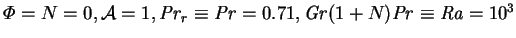
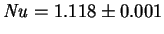

To test the dependence of the overall vapour and energy transport
rates on the mass transfer rate factor, a series of Fastflo solutions were obtained for a square cavity (
 ) by the method
described in chapter 5. The mass transfer rate factor was
varied from 0.105 to 0.693. All other parameters were kept constant,
except the buoyancy ratio,
) by the method
described in chapter 5. The mass transfer rate factor was
varied from 0.105 to 0.693. All other parameters were kept constant,
except the buoyancy ratio,  , which, like
, which, like  , is proportional to
the mass fraction difference,
, is proportional to
the mass fraction difference,  , for fixed reference mass
fraction level,
, for fixed reference mass
fraction level,  . The overall transport rates are listed in
tables 6.1 - 6.2.
. The overall transport rates are listed in
tables 6.1 - 6.2.
It will be noticed that the mean Sherwood and Nusselt
numbers vary by less than 0.8% and 1.3%, respectively, in spite of the
fact that the mass transfer rate correction factors vary by 31% and 73%.
The variability in the predicted Sherwood and Nusselt numbers is close to
the limits of accuracy of the numerical solutions and may also be affected
by the changes in the buoyancy ratio,  , though this parameter generally
has little effect on the transport rates at these Schmidt and Prandtl numbers
if
, though this parameter generally
has little effect on the transport rates at these Schmidt and Prandtl numbers
if
 is fixed
(McBain 1995, 1997b; §3.3.16).
is fixed
(McBain 1995, 1997b; §3.3.16).
The corresponding wide variation in the mass transfer rate correction factors
is exactly reflected in the dimensional transport rates; thus, this series
of runs strongly supports the contention (§6.1.2) that the
present nondimensionalization of the vapour and energy fluxes accounts for
the effect of the mass transfer rate factor,  .
.
The energy transfer results (table 6.2) may be compared with
de Vahl Davis's (1983) bench-mark solution for the
analogous single fluid heat transfer problem (
). He estimated
, which lies within 1% of each of the three present results
for finite  .
.
Another example of the effect of  is provided by the numerical
solutions of
Markham and Rosenberger (1980; §3.2.3)
and Greenwell et al. (1981; §3.2.4) for
isothermal vapour transport in cylinders. Both studies found that moderately
large values of
is provided by the numerical
solutions of
Markham and Rosenberger (1980; §3.2.3)
and Greenwell et al. (1981; §3.2.4) for
isothermal vapour transport in cylinders. Both studies found that moderately
large values of  (1.0 and 0.944) led to strong radial variations
in the vapour transport, but had no discernible effect on the mean
Sherwood number.
(1.0 and 0.944) led to strong radial variations
in the vapour transport, but had no discernible effect on the mean
Sherwood number.
The results of this section suggest that in order to calculate the
overall vapour and
(sensible) energy transport rates it may be possible to use a solution
with a different value of  ; in particular, one with
; in particular, one with  .
The latent energy transport rate can then be immediately calculated from the
Sherwood number and (2.68).
This, of course, has great computational advantages: the transpiration
boundary condition (2.59) becomes trivially homogeneous,
the mixture specific heat capacity in the advective energy flux
(2.49) becomes constant, and the interdiffusion flux (2.50)
vanishes. The last two changes greatly simplify the energy equation
(2.55), which then takes on the form (2.70).
.
The latent energy transport rate can then be immediately calculated from the
Sherwood number and (2.68).
This, of course, has great computational advantages: the transpiration
boundary condition (2.59) becomes trivially homogeneous,
the mixture specific heat capacity in the advective energy flux
(2.49) becomes constant, and the interdiffusion flux (2.50)
vanishes. The last two changes greatly simplify the energy equation
(2.55), which then takes on the form (2.70).
This procedure is not exact. The mass transfer rate factor,
 , does appear in the governing equations and cannot be completely
dismissed as a parameter. Deviations from the mass transfer rate correction
factors predicted by film theory have been noted for the forced convection
laminar boundary layer by Bird et al. (1960, pp. 672-6), Spalding
(1963, pp. 148-51) and Rosner (1966).
These errors are small, however, unless
the mass transfer rate is high, and vanish as
, does appear in the governing equations and cannot be completely
dismissed as a parameter. Deviations from the mass transfer rate correction
factors predicted by film theory have been noted for the forced convection
laminar boundary layer by Bird et al. (1960, pp. 672-6), Spalding
(1963, pp. 148-51) and Rosner (1966).
These errors are small, however, unless
the mass transfer rate is high, and vanish as
 .
The use of
.
The use of  as the driving force is certainly expected to be
superior to its alternatives, but the primary purpose of the present chapter
is the formulation of a simplifying approximation for small values of
as the driving force is certainly expected to be
superior to its alternatives, but the primary purpose of the present chapter
is the formulation of a simplifying approximation for small values of  ;
any degree of accuracy at high values should be regarded as a bonus.
;
any degree of accuracy at high values should be regarded as a bonus.
If, as is the case in the growth of crystals from the vapour, the local values of Sh are important, rather than just their mean, solution of the full equations is certainly indicated. Even in this case, though, the low mass transfer rate approximation may be useful for understanding qualitative features of the flow, particularly those due to buoyancy, and as a good initial guess for iterative solution procedures. Being rational, it could also be taken as the zeroth term in an asymptotic expansion.